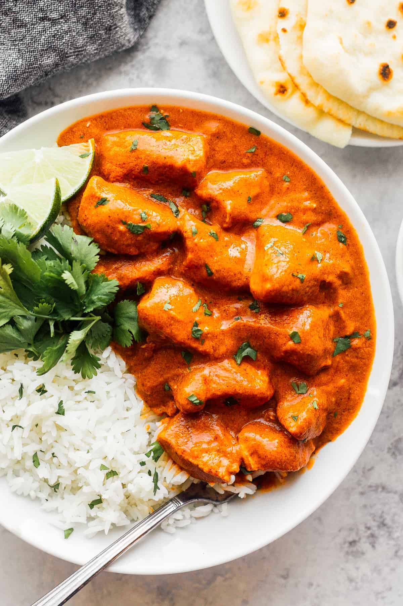

Explore India’s Rich Cuisine
Discover the delightful flavors of India's most cherished dishes.

Butter Chicken
Creamy, rich, and full of flavor, this dish is one of India's most famous curries.
Masala Dosa
A crispy golden crepe stuffed with spicy potato filling, served with chutney & sambar.

Samosa
Deep-fried pastry filled with spicy potatoes, peas, and served with chutneys.
Pani Puri
Crispy puris filled with tangy, spicy water and mashed potatoes – a favorite street food.

Biryani
Fragrant rice dish layered with marinated meat, saffron, and aromatic spices.